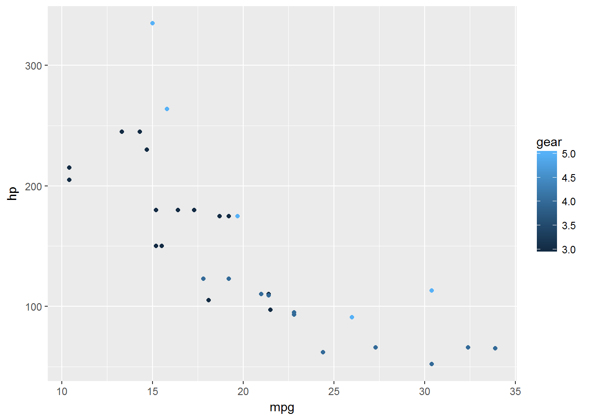

Create ggplot2 plots in a loop.
Overview
ggloop allows the user to use create multiple ‘ggplot2’ plots. Plots are created by passing multiple aesthetics via a vector of aesthetics to ggloop(). Users can use both dplyr-like syntax (i.e. x = mpg:hp, y = 1, color = 4:8, etc) and ggplot2-like syntax (i.e x = mpg/cyl, y = wt + hp, color = factor(cyl), etc).
Installation
## CRAN
install.packages("ggloop")
## GitHub
devtools::install_github("seasmith/ggloop") Where can I learn how to use ggloop?
You can see ggloop in action with the intro vignette (vignette("intro", "ggloop")). You can also see the example and the very brief overview available below.
A simple example
library(ggloop)
library(ggplot2)
g <- ggloop(data = mtcars,
mappings = aes_loop(x = c(mpg:hp, mpg/cyl),
y = c(hp:mpg, disp/hp),
color = gear),
remap_xy = FALSE)
g <- g + geom_point()
g$color.gear$x.mpg_y.hp
The functions
ggloop has three exported functions:
-
ggloop(data, mappings = aes_loop(), remap_xy = TRUE, remap_dots = FALSE, ..., environment = parent.frame() )- Mimicks
ggplot2::ggplot()and its arguments. - Returned values:
- A single ggplot object = Created by
x,y, and...arguments of length one or less. - A list of ggplot objects = Created when there is no
...argument inaes_loop(). - A nest list (a list of a list) of ggplot objects = Created when a
...argument is supplied....names sit on the top-level of the nested list (they divide the list into however many parts based on the number of such arguments and the remapping behavior).xandysit at the bottom-level of the nested list
- A single ggplot object = Created by
- Mimicks
-
aes_loop()- Mimicks
aes() - Accepts vectors of values for each argument.
- Arguments with more than one value must be wrapped by
c()and NOT have any nestedc(). - Syntax:
-
dplyr-like=mpg:hp,1,5:9,cyl, etc. -
ggplot2-like=factor(cyl),gear + cyl, etc. - Both syntax styles can be combined for one argument using the
c()as a wrapper and onlyc().
-
- Mimicks
-
%L+%- Is a
+operator for a nested list, list, or single ‘ggplot’ object.
- Is a